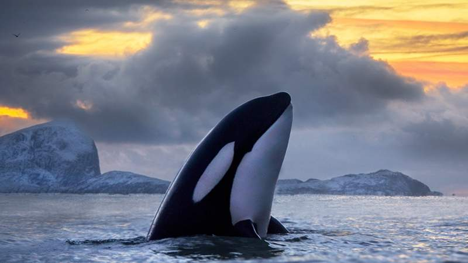

Os estranhos ataques de orcas contra barcos na costa de Portugal e da Espanha que intrigam cientistas
Victoria Gill, Repórter de Ciência da BBC News, 17:39 26 novembro 2020

Independentemente de como descrevemos e avaliamos esses episódios
a partir de uma perspectiva humana, são um comportamento novo e
potencialmente perigoso — tanto para pessoas nos barcos quanto para animais.
O excepcional alinhamento de Júpiter e Saturno, que não acontece de tal modo desde a Idade Média
Alejandro Millán Valencia, Da BBC News Mundo,13:55 25 novembro 2020
21 de dezembro marcará o ápice da "grande conjunção" entre os dois planetas, que poderá ser vista
facilmente de horizontes abertos; proximidade tamanha entre eles só ocorreu séculos atrás.